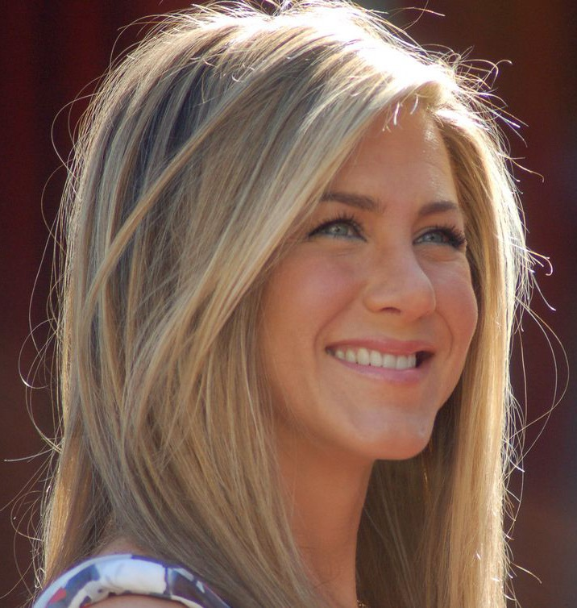
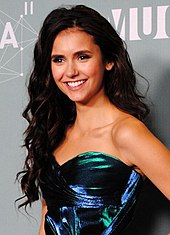
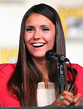

<!DOCTYPE html>
<!--
Click nbfs://nbhost/SystemFileSystem/Templates/Licenses/license-default.txt to change this license
Click nbfs://nbhost/SystemFileSystem/Templates/Other/html.html to edit this template
-->
<html>
    <head>
        <title>TODO supply a title</title>
        <meta charset="UTF-8">
        <meta name="viewport" content="width=device-width, initial-scale=1.0">
    </head>
    <body>

    </body>
</html>
<h1 style="color:red;text-align:center;" >Известни личности</h1> 
        
        <a href="#jen"> Дженисър Анистън</a> <a href='#nina'>Нина Добрев</a>

        <h2 id="jen">Дженифър Анистън</h2>
        
        
        
        <p><b>Биография:</b> Дженифър Анистън е родена на 11 февруари 1969 г. в 
            Шърман Оукс, район на Лос Анджелис. Баща ѝ, гъркът Янис Анастасакис 
            (Джон Анистън), е актьор, известен с ролята си в сапунения сериал 
            „Дните на нашия живот“. Той сменя гръцкото си име Анастасакис на 
            по-американски звучащото Анистън. След година, прекарана в Гърция, 
            семейството се връща в САЩ и се установява в Ню Йорк, където баща ѝ 
            печели роля в сапунения сериал „Love of Life“ и по-късно в 
            „Search for Tomorrow“. През 1985 семейството се премества в 
            Лос Анджелис, където баща ѝ вече се снима в 
            „Дните на нашия живот“.</p>
        
        <p><b>Родена:</b> 11 февруари 1969 г.</p>
        
        <p><b>Цитат на Дженифър Анистън:</b>
        <DD>"Най - прекрасното ухание на света е това на мъжа, когото обичаш"</DD>
        </p>
        
        <p>
            <b>Филмография:</b>
            
            <ul>
                <li><i>She's Dunny That Way(2015)</i></li>
                <li><i>Mother's Day(2016)</i></li>
                <li><i>Storks(2016)</i></li>
                <li><i>The Yellow Birds(2017)</i></li>
                <li><i>Dumplin(2018)</i></li>
            </ul>
        </p>
        
        
        
        <h2 id='nina'>Нина Добрев</h2>
        
        
        
        <p> 
            
            <b>Биография.</b> Кариерата на Добрев започва като модел и с участия
            в реклами, а впоследствие започва да се явява и на прослушвания за 
            различни роли в киното и телевизията. Има роли във филмите 
            „Fugitive Pieces“, „Away from Her“, „Never Cry Werewolf“. Участва в
            телевизионния сериал „Деграси: Следващо поколение“. През 2007 г. се 
            появява в музикалния клип на Уейд Ален-Маркъс и Дейвид Баум. 
            Има роля и във филма на MTV – „The American Mall“. Нина играе 
            главната роля на Елена Гилбърт в свръхестествения сериал 
            „Дневниците на вампира“.
        </p>
        
        <p><b>Родена:</b> 9 януари 1989 г.</p>
        
        <p>
            <b>Цитат на Нина Добрев:</b>
            <DD>"Въпреки, че порастваме, ние не трябва да спираме да се забавляваме."</DD>
        </p>
        
        <p>
            <b>Филмография:</b>
        <ul>
            <li>Movies</li> 
            <ol>
                <li><i>The Final Girls(2015)</i></li>
                <li><i>xXx: Return of Xander Cage(2017)</i></li>
                <li><i>Flatliners(2017)</i></li>
                <li><i>Dog Days(2018)</i></li>
                <li><i>Departures(2018)</i></li>
            </ol>
            <li>Series</li>
            <ol>
                <li><i>The Originals(2014)</i></li>
                <li><i>The Vampire Diaries(2009-2017</i></li>
                <li><i>Workaholics(2017)</i></li>   
            </ol>
        </ul>
            
        </p>
        
        <html/>